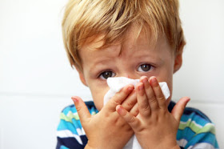
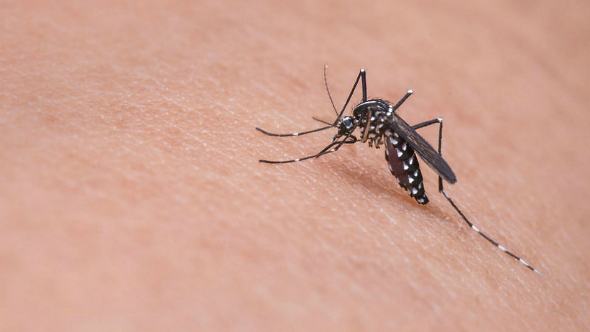

Pretty much as we all love rains, well so do the viruses and bacteria!
All you need to know about the rainy flu. And how best to treat it and protect yourself.
Commonly caused by rhinoviruses, colds usually start with the inflammation of the throat, often leading to a runny nose. Prolonged colds can later bring on a cough. These two may seem very common but if left untreated, they may lead to serious illnesses like sinusitis and bronchitis. See more:
Continuing colds and coughs, accompanied by fever, headache, or body aches, can be caused by another kind of microorganism: the flu virus. See more:
Rainwater can fill up empty containers scattered around your house. The resulting stagnant water is the favorite breeding ground for mosquitoes, especially the Aedes aegypti female mosquitoes that are carriers of the dengue virus. See more:
This one is an intestinal infection caused by a bacterium called Vibrio cholerae. You usually get this when you consume contaminated food and water. See more:
Commonly caused by rhinoviruses, colds usually start with the inflammation of the throat, often leading to a runny nose. Prolonged colds can later bring on a cough. These two may seem very common but if left untreated, they may lead to serious illnesses like sinusitis and bronchitis. If you have been struck by the virus, make sure to take lots of water and vitamin C..
Symptoms of a common cold usually appear one to three days after exposure to a cold-causing virus. Signs and symptoms, which can vary from person to person, might include:
The discharge from your nose may become thicker and yellow or green in color as a common cold runs its course. This isn't an indication of a bacterial infection
The most common ailments contracted during winter are coughs and colds. While many people manage to avoid falling sick, especially those who are fit and have a strong immune system, for most of us a week or two with a runny nose and cough is an annual event. There are over 100 different viruses that can cause the common cold, and they are mutating all the time, which is why finding a cure is tantamount to impossible. The cold infects the upper airways, and can be caught by droplet spread, when an infected person coughs or sneezes. The constant cough that can accompany the cold makes this a very easy disease to contract in the winter months, and most people will catch a cold two to four times a year, especially during the winter months.
Influenza is a viral infection that attacks your respiratory system — your nose, throat and lungs. Influenza is commonly called the flu, but it's not the same as stomach "flu" viruses that cause diarrhea and vomiting. For most people, influenza resolves on its own. But sometimes, influenza and its complications can be deadly. People at higher risk of developing flu complications include:
Initially, the flu may seem like a common cold with a runny nose, sneezing and sore throat. But colds usually develop slowly, whereas the flu tends to come on suddenly. And although a cold can be a nuisance, you usually feel much worse with the flu. 
Flu viruses travel through the air in droplets when someone with the infection coughs, sneezes or talks. You can inhale the droplets directly, or you can pick up the germs from an object — such as a telephone or computer keyboard — and then transfer them to your eyes, nose or mouth. People with the virus are likely contagious from the day or so before symptoms first appear until about five days after symptoms begin. Children and people with weakened immune systems may be contagious for a slightly longer time.Influenza viruses are constantly changing, with new strains appearing regularly. If you've had influenza in the past, your body has already made antibodies to fight that particular strain of the virus. If future influenza viruses are similar to those you've encountered before, either by having the disease or by getting vaccinated, those antibodies may prevent infection or lessen its severity.But antibodies against flu viruses you've encountered in the past can't protect you from new influenza strains that can be very different immunologically from what you had before.
The influenza vaccine isn't 100 percent effective, so it's also important to take measures such as these to reduce the spread of infection:
Dengue (DENG-gey) fever is a mosquito-borne disease that occurs in tropical and subtropical areas of the world. Mild dengue fever causes a high fever, rash, and muscle and joint pain. A severe form of dengue fever, also called dengue hemorrhagic fever, can cause severe bleeding, a sudden drop in blood pressure (shock) and death. Millions of cases of dengue infection occur worldwide each year. Dengue fever is most common in Southeast Asia and the western Pacific islands, but the disease has been increasing rapidly in Latin America and the Caribbean. Researchers are working on dengue fever vaccines. For now the best prevention is to reduce mosquito habitat in areas where dengue fever is common.
Many people, especially children and teens, may experience no signs or symptoms during a mild case of dengue fever. When symptoms do occur, they usually begin four to seven days after you are bitten by an infected mosquito. 
Dengue fever is caused by any one of four types of dengue viruses spread by mosquitoes that thrive in and near human lodgings. When a mosquito bites a person infected with a dengue virus, the virus enters the mosquito. When the infected mosquito then bites another person, the virus enters that person's bloodstream.After you've recovered from dengue fever, you have immunity to the type of virus that infected you — but not to the other three dengue fever virus types. The risk of developing severe dengue fever, also known as dengue hemorrhagic fever, actually increases if you're infected a second, third or fourth time.
Factors that put you at greater risk of developing dengue fever or a more severe form of the disease include: Living or traveling in tropical areas. Being in tropical and subtropical areas increases your risk of exposure to the virus that causes dengue fever. Especially high-risk areas are Southeast Asia, the western Pacific islands, Latin America and the Caribbean. Prior infection with a dengue fever virus. Previous infection with a dengue fever virus increases your risk of having severe symptoms if you're infected again.
Cholera is a bacterial disease usually spread through contaminated water. Cholera causes severe diarrhea and dehydration. Left untreated, cholera can be fatal within hours, even in previously healthy people. Modern sewage and water treatment have virtually eliminated cholera in industrialized countries. But cholera still exists in Africa, Southeast Asia and Haiti. The risk of a cholera epidemic is highest when poverty, war or natural disasters force people to live in crowded conditions without adequate sanitation. Cholera is easily treated. Death from severe dehydration can be prevented with a simple and inexpensive rehydration solution.
Most people exposed to the cholera bacterium (Vibrio cholerae) don't become ill and don't know they've been infected. But because they shed cholera bacteria in their stool for seven to 14 days, they can still infect others through contaminated water.Most cases of cholera that cause symptoms cause mild or moderate diarrhea that's often hard to tell apart from diarrhea caused by other problems. Others develop more-serious signs and symptoms of cholera, usually within a few days of infection.
A bacterium called Vibrio cholerae causes cholera infection. The deadly effects of the disease are the result of a toxin the bacteria produces in the small intestine. The toxin causes the body to secrete enormous amounts of water, leading to diarrhea and a rapid loss of fluids and salts (electrolytes).Cholera bacteria might not cause illness in all people who are exposed to them, but they still pass the bacteria in their stool, which can contaminate food and water supplies .
Everyone is susceptible to cholera, with the exception of infants who get immunity from nursing mothers who have previously had cholera. Still, certain factors can make you more vulnerable to the disease or more likely to have severe signs and symptoms.